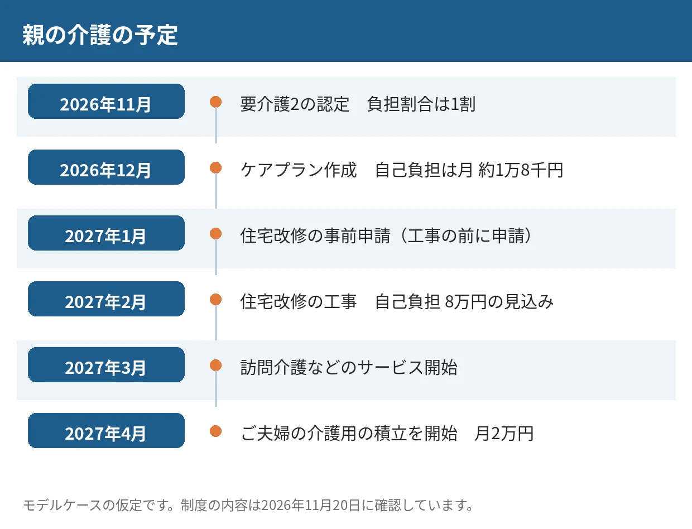

親の介護が始まったとき 初期費用と毎月の費用を分ける
親が要介護2と認定されたとき、毎月の自己負担は約1万8千円、住宅改修は最終的な自己負担が8万円の見込みで、償還払いなら支払い時に26万円が必要です。親御さんの家計と子世帯の家計を分ける考え方を、予定表と収支のリストで整理します。
この記事の要点
- 毎月の介護サービスの自己負担は約1万8千円で、お母さまの年金の範囲に収まります。ご夫婦の負担は、訪問の交通費月8千円ほどです
- 住宅改修の最終的な自己負担は8万円ですが、償還払いなら支払い時に26万円が必要です。お母さまの預貯金から出す形にすると、ご夫婦の家計と老後の資金に影響しません
- 次の一歩は、ケアマネジャーへの相談と、住宅改修の事前申請、支払い方法（償還払いか受領委任払いか）の確認です。あわせて、ご夫婦は来年4月から月2万円の介護用の積立を始めることです
制度・金額の確認日 2026年11月20日
ご相談の形で書いたモデルケースです。ご家庭と家計の数字は仮定で、介護保険の自己負担と住宅改修の制度の内容は2026年11月20日に確認しています
今回のご相談
「近くで一人暮らしをしている母が、要介護2の認定を受けました。介護サービスに毎月いくらかかるのか、実家の手すりの工事にいくらかかるのかが分からず、自分たちの家計から出すべきなのかも迷っています」
介護のお金は、親御さんご自身の家計と、子世帯の家計を分けて考えることが大切です。このご家庭の場合、お母さまの年金の中で毎月の費用が収まるかどうかと、まとまった工事費をどちらが出すのかが課題でした。
ご相談のご家庭
- 夫の浩さん（56歳）。建設会社の現場管理の仕事で、手取りは月32万円、賞与は年に80万円ほどです
- 妻の恵子さん（54歳）。スーパーでパート勤務をしていて、手取りは月10万円です。お母さまの通院の付き添いのため、勤務の日数を調整できる職場だそうです
- 住まいは千葉県内の持ち家で、住宅ローンの返済は月9万円です。お子さまは独立していて、現在はご夫婦2人で暮らしています
- 浩さんのお母さま（82歳）は、同じ市内で一人暮らしをしています。年金は月13万円で、預貯金は350万円ほどです。このたび要介護2の認定を受け、介護保険の負担割合は1割です
このご家庭の心配ごと
- 毎月の介護サービスの自己負担。お母さまの年金の中で収まるのかが心配だそうです
- 実家の住宅改修の費用。手すりの取付けと段差の解消を考えていますが、介護保険がどこまで使えるのかが分からないそうです
- 介護が長くなった場合の備え。ご夫婦の老後の資金との兼ね合いも気になるそうです
現在の収支（ご相談に関係する範囲）
ご夫婦の収入（月）
- 浩さんの手取り 32万円
- 恵子さんの手取り 10万円
- 合計 42万円
ご夫婦の支出（月）
- 住宅ローンの返済 9万円
- 食費 7万円
- 水道光熱・通信 3万円
- 車の維持費 2万5千円
- 保険料 2万円
- 日用品や趣味など 5万円
- 合計 28万5千円
残りと資産
- 月の残り 13万5千円（うち貯蓄に8万円、臨時支出とゆとりに5万5千円）
- 預貯金 680万円
お母さまの収支（月）
- 年金 13万円
- 食費や水道光熱費などの生活費 9万円
- 医療費や日用品など 1万2千円
- 残り 2万8千円
これから必要になるお金と時期
- 2026年11月 要介護2の認定。負担割合は1割です
- 2026年12月 ケアプランの作成。介護サービスの自己負担は、月約1万8千円の案です
- 2027年1月 住宅改修の事前申請。工事の前に、市区町村への申請が必要です
- 2027年2月 住宅改修の工事。見積りは26万円で、最終的な自己負担は8万円の見込みです。支払い方法によっては、支払いの時点で26万円が必要です
- 2027年3月 訪問介護などのサービスの開始
- 2027年4月 ご夫婦の介護用の積立を開始 月2万円

介護保険のサービスを使ったときの自己負担は、費用の1割が原則で、一定以上の所得がある場合は2割または3割になります。お母さまは負担割合証で1割と決まっています。ケアプランの案では、訪問介護と通所介護を合わせたサービスの費用が月18万円ほどで、自己負担はその1割の約1万8千円です。
住宅改修については、手すりの取付けや段差の解消などの対象工事に、介護保険から支給される仕組みがあります。支給の対象になる工事費には限度額があり、支給限度基準額は20万円です。自己負担の割合は所得によって1割から3割で、支給は費用の9割から7割です。お母さまは1割なので、20万円の工事費のうち18万円が支給され、自己負担は2万円になります。2割の方なら支給は16万円、3割の方なら14万円です。限度額を超えた分の工事費は、全額が自己負担です。
ここで、お金が出ていく時期と戻る時期を分けて考えます。基本の形は、いったん工事費の全額を支払い、後日、申請した分が給付される償還払いです。このご家庭の例で償還払いなら、支払いの時点で26万円が必要で、後日18万円が給付されて、最終的な負担が8万円になります。給付は工事の後の申請や審査を経るので、入金が支払いより遅れる点に注意が必要です。一方、支払い時の負担を自己負担分だけにできる受領委任払いを取り入れている市区町村もあり、原則としている所もあります。使えるかどうかと条件は、お住まいの市区町村と施工する事業者によって異なります。工事の前に市区町村への事前申請が必要で、申請の前に着工すると支給の対象にならない場合があります。
ご提案1 毎月の介護費用は、お母さまの年金の中で収める
お母さまの月の残りは2万8千円で、介護サービスの自己負担約1万8千円は、この範囲に収まります。毎月の費用をお母さまの年金から出す形にしておくと、ご夫婦の家計を圧迫せず、お母さまご自身のお金の管理も続けられます。
ご夫婦が負担するのは、週1回の訪問と通院の付き添いにかかる交通費で、月8千円ほどです。この金額は、今の家計の「日用品や趣味など」の範囲でまかなえます。親御さんの費用と子世帯の費用の境界を先に決めておくことが、長く続く介護では大切です。
ご提案2 住宅改修の自己負担8万円は、お母さまの預貯金から出す
住宅改修の見積りは26万円です。内訳は、手すりの取付けが3か所で9万円、玄関と浴室の段差の解消が11万円、対象外の修繕が6万円です。
介護保険の対象になる工事費は20万円までですので、支給は18万円、最終的な自己負担は対象分の2万円と、対象外の6万円を合わせた8万円になります。償還払いの場合、支払いの時点では工事費の26万円をいったん用意し、後日18万円が戻ります。受領委任払いが使えると確認できた場合は、支払い時の負担は8万円です。どちらの場合も、用意する資金と最終的な負担を分けて、お母さまの預貯金350万円から出す形をご提案します。工事の内容はお母さまの住まいのためのものですので、費用もお母さまの資産から出すほうが、後の整理がしやすくなります。
進め方で大切なのは順番です。まず担当のケアマネジャーに相談し、市区町村へ事前に申請して、支給の対象になる工事の範囲を確認してから着工します。
ご提案3 介護が進んだ場合に備えて、ご夫婦は月2万円を積み立てる
今の段階では、ご夫婦の家計から介護へ出すお金は交通費だけです。ただし、介護の程度が進むと、サービスの量が増えて自己負担が増えたり、施設への入居を検討する時期が来たりします。
そこで、今の貯蓄月8万円のうち2万円を「親御さんの介護用」として分けて積み立てることをご提案します。1年で24万円、3年で72万円になります。使い道が決まっていない段階では、普通預金での積立が向いています。あわせて、ご夫婦ご自身の老後の資金は、従来の貯蓄の流れを崩さずに続けることが大切です。
お母さまの生活では、介護保険の対象にならない家事の支援が必要になる場面もあります。掃除や買い物の代行などは、家事支援サービスの料金と内容を確認したうえで、必要な分だけ使う形が考えられます。
このご家庭への結論
- 毎月の介護サービスの自己負担は約1万8千円で、お母さまの年金の範囲に収まります。ご夫婦の負担は、訪問の交通費月8千円ほどです
- 住宅改修の最終的な自己負担は8万円ですが、償還払いなら支払い時に26万円が必要です。お母さまの預貯金から出す形にすると、ご夫婦の家計と老後の資金に影響しません
- 次の一歩は、ケアマネジャーへの相談と、住宅改修の事前申請、支払い方法（償還払いか受領委任払いか）の確認です。あわせて、ご夫婦は来年4月から月2万円の介護用の積立を始めることです
この記事のご家庭と家計はモデルケースの仮定です。介護保険の自己負担の割合は、負担割合証で決まります。住宅改修の支給限度基準額は20万円で、給付の時期と支払い方法（償還払いか受領委任払いか）、対象になる工事の種類と手続きは、お住まいの市区町村によって案内が異なります。制度の内容は2026年11月20日に確認しています。